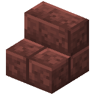
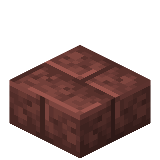
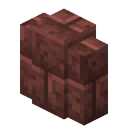
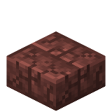
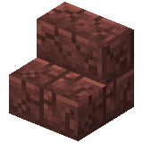
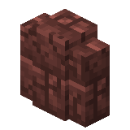
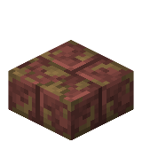
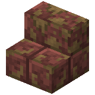
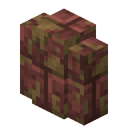

About
Bauxite bricks, mossy bauxite bricks, and cracked bauxite bricks are sedimentary rock blocks, crafted from bauxite.
Bauxite brick slabs, mossy bauxite brick slabs, and cracked bauxite brick slabs are slab variants of their respective brick blocks.
Bauxite brick stairs, mossy bauxite brick stairs, and cracked bauxite brick stairs are stair variants of their respective brick blocks.
Bauxite brick walls, mossy bauxite brick walls, and cracked bauxite brick walls are wall variants of their respective brick blocks.
Click here to view all bauxite brick variants.
Obtaining
Crafting

Craft four bauxite bricks by placing bauxite in a two-by-two square in a crafting table.
Craft four bauxite bricks by placing bauxite in a two-by-two square in a crafting table.
Smelting

Smelt bauxite bricks in a furnace to make cracked bauxite bricks.
Stonecutting
Craft bauxite bricks by placing a bauxite in a stonecutter.
Usage
Crafting
Recipes
Craft six bauxite brick, mossy bauxite brick, or cracked bauxite brick slabs in a crafting table by placing three matching bauxite brick blocks in a single row.
Craft four bauxite brick, mossy bauxite brick, or cracked bauxite brick stairs in a crafting table by placing three matching bauxite brick blocks in a staircase pattern.
Craft six bauxite brick, mossy bauxite brick, or cracked bauxite brick walls in a crafting table by filling the middle and bottom rows with matching bauxite brick blocks.
Stonecutting
Recipes
Craft two bauxite brick slabs by placing a bauxite in a stonecutter.
Craft bauxite brick stairs by placing bauxite in a stonecutter.
Craft bauxite brick walls by placing a bauxite in a stonecutter.
Craft bauxite brick, mossy bauxite brick, or cracked bauxite brick slabs by placing a matching bauxite brick block in a stonecutter.
Craft bauxite brick, mossy bauxite brick, or cracked bauxite brick stairs by placing a matching bauxite brick block in a stonecutter.
Craft bauxite brick, mossy bauxite brick, or cracked bauxite brick walls by placing a matching bauxite brick block in a stonecutter.
Technical
Configuration
Toggles the availability of bauxite bricks, bauxite brick stairs, bauxite brick slabs, and bauxite brick walls:
- In-Game Screen Name: Enable Bauxite Bricks
-
Config File Key:
enable_bauxite_brickstrue/Yes: Enabled (Default)false/No: Disabled and hidden
Dependency: If bauxite is disabled, bauxite bricks will be automatically disabled as well. Visit the bauxite page to read more about it.
Bauxite Brick Variants

Stairs

Slab

Wall
Cracked Bauxite Brick Variants

Stairs

Slab

Wall
Mossy Bauxite Brick Variants

Stairs

Slab

Wall